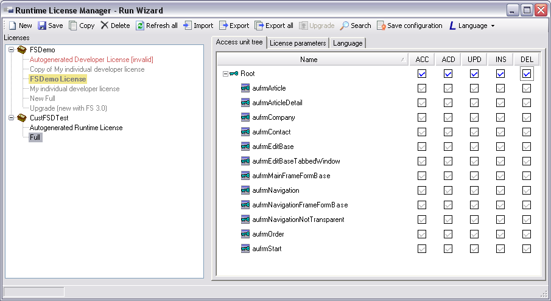

Laufzeitlizenzen
Mit dem Runtime License Manager werden Laufzeitlizenzen für die mit Framework Studio erstellte Anwendung erzeugt und verwaltet. Dieses Werkzeug wird über den Menüpunkt Tools / Runtime License Manager in Framework Studio oder im Package Manager gestartet. Außerdem wird das Tool über den Button Change configuration unter dem Navigationspunkt Runtime License sowohl im Run Wizard als auch im Publish Wizard gestartet.
Allgemeines / Hintergrund
Laufzeitlizenzen werden im Repository gespeichert. Dort können für jedes Label (also für jede Version eines Packages) beliebig viele Lizenzen abgelegt werden.
Wenn eine Applikation gestartet werden soll, muss zuvor im Brokerverzeichnis die Datei FSLicense.xml erstellt werden. Diese Datei enthält für jedes Label der Applikation eine Lizenz.
Mit dem Runtime License Manager wird gesteuert, welche der vorhandenen Lizenzen für die erstellten Applikationen und Service Hosts verwendet werden sollen.
Wenn Sie den Runtime License Manager aus dem Run Wizard oder aus dem Publish Wizard heraus starten, werden die Einstellungen im aktuellen Setting gespeichert. Sollte für ein Package, von dem man der Besitzer ist, noch keine Lizenz existieren, wird für das Package automatisch eine Developer Lizenz erzeugt.
Wenn Sie den Runtime License Manager über den Menüpunkt Tools / Runtime License Manager starten, werden die Einstellungen, welche Lizenzen verwendet werden sollen, nicht gespeichert.
Runtime License Manager:

Auf der linken Seite wird ein Baum dargestellt, der sogenannte Lizenzbaum. In diesem Baum werden auf der ersten Ebene hierarchisch sortiert alle Packages der Anwendung angezeigt. In den Unterknoten der Packages werden alle im Repository (zur aktuellen Package Version) abgelegten Lizenzen angezeigt.
Wenn im Lizenzbaum durch einfachen Klick mit der Maus eine Lizenz ausgewählt wird, werden alle Details zu dieser Lizenz im rechten Fensterbereich dargestellt. Dort stehen die Registerkarten Access unit tree (Registerkarte Access unit tree), License parameters (Registerkarte License Parameters) und Language (Registerkarte Language) zur Auswahl.
Buttons
Im Runtime License Manager stehen folgende Buttons zur Verfügung:
New

Anlegen einer neuen Lizenz für das aktive Package
Save

Alle Änderungen an der ausgewählten Lizenz werden in die Datenbank gespeichert. Dieser Button ist nur aktiv, wenn die ausgewählte Lizenz seit dem letzten Laden oder Speichern geändert wurde.
Copy

Es wird eine Kopie einer Lizenz aus dem aktiven Package angelegt. Dieser Button ist nur aktiv, wenn eine Lizenz aus dem aktiven Package ausgewählt ist.
Delete
Die ausgewählte Lizenz wird aus der Datenbank gelöscht
Refresh all

Alle Lizenzen des aktiven Packages werden aktualisiert. Dieser Schritt ist dann nötig, wenn sich die Access Unit Hierarchie (Access Unit Hierarchie) für eines der verwendeten Packages geändert hat, beispielsweise wenn eine neue Version eines Basispackages importiert wurde oder im aktiven Package neue Access Units eingecheckt wurden. Außerdem empfiehlt sich diese Aktion nach dem Upgrade von Lizenzen und nach dem Import von Lizenzen für das aktive Package.
Import

Eine einzelne, zuvor in eine XML-Datei exportierte Lizenz wird importiert.
Export

Die ausgewählte Lizenz wird in eine XML-Datei exportiert.
Export all

Alle Lizenzen des aktiven Packages werden in je eine XML-Datei in einem gemeinsamen Ordner exportiert.
Upgrade

Lizenzen, die im Repository für eine ältere Package Version (Label) des ausgewählten Packages gespeichert sind, können in die aktuelle Package Version kopiert werden. Siehe Lizenz aus einem anderen Label übertragen.
Search

Startet den Dialog zum Suchen nach AccessUnits. Siehe Suche nach Access Units.
Save Configuration

Die Lizenzauswahl wird in das aktuelle Setting gespeichert und der Runtime License Manager geschlossen. Siehe Konfiguration speichern. Dieser Button steht nur dann zur Verfügung, wenn der Runtime License Manager über den Run Wizard oder den Publish Wizard geöffnet wurde.
Save FSLicense.xml

Die Xml-Datei FSLicense.xml wird im Brokerverzeichnis erzeugt, die für jedes Package der Anwendung eine Lizenz erhält, und der Runtime License Manager wird geschlossen. Siehe Konfiguration speichern. Dieser Button steht nur dann zur Verfügung, wenn der Runtime License Manager über den Menüpunkt Tools / Runtime License Manager gestartet wurde.
Language

Mit diesem Drop Down Button wird die Sprache ausgewählt, in der die Access Units im Access Unit Tree (Registerkarte Access unit tree) dargestellt werden. Zur Auswahl stehen alle Sprachen, die im Default Package definiert wurden und
Lizenz aus einem anderen Label übertragen
Wenn im Lizenzbaum ein Package ausgewählt ist, kann mit dem Button  Upgrade der Dialog zum Kopieren von Lizenzen aus einer anderen Version des Packages (Label) geöffnet werden.
Upgrade der Dialog zum Kopieren von Lizenzen aus einer anderen Version des Packages (Label) geöffnet werden.
Runtime License Manager - Upgrade:

In der Combobox Source Label wird das Label ausgewählt, von dem Lizenzen kopiert werden sollen. Mit dem Button Upgrade werden die ausgewählten Lizenzen kopiert.
Wird ein bereits gelöschtes Label ausgewählt, können Lizenzen mit dem Button Delete endgültig aus dem Repository entfernt werden.
Beim Upgrade wird der Gültigkeitsbereich der Lizenzen (Version from und Version to) auf die aktuelle Packageversion erweitert, wenn diese eine gültige .NET Version ist (2 bis 4 natürliche Zahlen getrennt durch je einen Punkt) und die aktuelle Packageversion nicht durch den Versionsbereich abgedeckt ist. Andernfalls wird der Gültigkeitsbereich unverändert übernommen.
Warning
Beim Upgrade von Lizenzen aus einem Basispackage werden diese nicht verändert, wenn man nicht Besitzer des Packages ist. Neue Funktionalität ist also ggf. nicht freigeschaltet. Dazu muss eine neue Lizenz vom Hersteller des Basispackages eingespielt werden.
Suche nach Access Units
Wenn im Lizenzbaum eine Lizenz ausgewählt ist, die keine Developer-Lizenz ist, kann mit dem Button  Search der Dialog zum Suchen nach Access Units gestartet werden.
Search der Dialog zum Suchen nach Access Units gestartet werden.
Access Unit Search:
Im Textfeld Search for geben Sie den Suchtext an. Im Bereich Search in geben Sie an, wo nach diesem Text gesucht werden soll:
Name
Technischer Name der Access Unit, z.B. aufrmArticle
Label
Bezeichnung, die im Access Unit Tree angezeigt wird
Description
Beschreibung, die für die Access Unit hinterlegt wurde
ID
ID, die die Access Unit eindeutig identifiziert
Mit der Checkbox Search Up legen Sie fest, ob von der aktuellen Position im Access Unit Tree aus aufwärts gesucht werden soll.
Im Bereich Permissions kann nach bestimmten Zugriffsrechten gesucht werden. Durch setzen der Checkboxen Access, Access Derived, Update, Insert oder Delete werden Vergleiche für die jeweilige Zugriffsart aktiviert. Für jede Zugriffsart kann der Wert mit einem der folgenden verglichen werden:
access-unit-permissions-options
{kind=link}
In der folgenden Übersicht wird für jede Option angegeben, auf welche Werte die Option einschränkt:
None
None und Explicit None
Allowed
Hierarchic Allowed und Explicit Allowed
Denied
Hierarchic Denied und Explicit Denied
Explicit None
Explicit None
Explicit Allowed
Explicit Allowed
Explicit Denied
Explicit Denied
Gray
Alle Rechte, jedoch nur die, die durch eine verwendete Lizenz verboten sind. Das entspricht allen Checkboxen, die mit grauem Hintergrund dargestellt werden.
Ändern Sie das Recht durch Anklicken oder über das Kontextmenü der Rechte-Checkbox.
Mit dem Button Find Next wird die Suche gestartet, mit dem Button Done beenden Sie die Suche und schließen das Suchfenster.
Die Suchergebnisse werden im Access Unit Tree blau und unterstrichen dargestellt.
Mit dem Button Show List werden alle Access Units, die den Suchkriterien entsprechen in einer Liste angezeigt.

In diesem Dialog kann mit dem Button Copy to clipboard (Tastenkombination Strg-C) die gesamte Liste mit Suchkriterien in die Zwischenablage kopiert werden. Mit dem Button Copy selected to clipboard werden alle ausgewählten Einträge in die Zwischenablage kopiert. Durch Doppelklick auf einen Eintrag wird dieser im Access Unit Tree ausgewählt.
Konfiguration speichern
Mit dem Button  Save Configuration / Save FSLicense.xml werden die aktuell ausgewählten Lizenzen in das aktuelle Setting übernommen bzw. in die Datei FSLicense.xml geschrieben und anschließend der Runtime License Manager geschlossen.
Save Configuration / Save FSLicense.xml werden die aktuell ausgewählten Lizenzen in das aktuelle Setting übernommen bzw. in die Datei FSLicense.xml geschrieben und anschließend der Runtime License Manager geschlossen.
Diese Funktion kann nur dann aufgerufen werden, wenn im Lizenzbaum eine Lizenz des aktiven Packages ausgewählt ist. Außerdem muss für jedes Basispackage eine Lizenz im Lizenzbaum ausgewählt sein (gelbe Markierung).
Wenn Sie für ein Basispackage eine andere Lizenz als die zurzeit gelb hinterlegte verwenden wollen, öffnen Sie das Kontextmenü der gewünschten Lizenz und wählen dort den Eintrag Use as Basic License aus.
Registerkarte Access unit tree

Auf dieser Registerkarte werden alle Access Units im so genannten Access Unit Tree dargestellt. Der Access unit tree stellt die Hierarchie dar, in der die Access Units angeordnet sind.
Warning
Damit die Hierarchie auf dem aktuellen Stand ist, müssen an allen Packages, nach der letzten Änderung der Hierarchie des jeweiligen Packages, AccessUnits als FrameworkCompiler „recursive from root“ kompiliert worden sein!
Dabei ist zu beachten, dass die Hierarchie eines Packages sich nicht nur über den Access Unit Treeview (Access Unit Hierarchie) ändern lässt, sondern auch bei jedem Einchecken eines neuen Forms automatisch geändert wird.
Importierte Packages müssen zur Aktualisierung der Hierarchie grundsätzlich nicht neu kompiliert werden, da dies bereits vor dem Export geschehen sein sollte.
In der Spalte Name werden alle Access Units hierarchisch dargestellt. Access Units mit einem Schlüsselsymbol  , Form Access Units mit einem Schlüssel auf einem Form
, Form Access Units mit einem Schlüssel auf einem Form  .
.
In den übrigen Spalten symbolisieren spezielle Checkboxen das erteilte Recht für die einzelnen Zugriffsarten (ACC = Access, ACD = AccessDerived, UPD = Update, INS = Insert, Del = Delete, Bedeutung der Zugriffsarten: Access Units).
Die speziellen Checkboxen können verschiedene Symbole darstellen:
 Leere Checkbox: Keine Angabe durch den Benutzer. Der Anwendung wird diese Zugriffsart für die AccessUnit verwehrt.
Leere Checkbox: Keine Angabe durch den Benutzer. Der Anwendung wird diese Zugriffsart für die AccessUnit verwehrt.
 Blauer Haken: Die Zugriffsart der AccessUnit wird explizit erlaubt.
Blauer Haken: Die Zugriffsart der AccessUnit wird explizit erlaubt.
 Roter waagerechter Strich: Die Zugriffsart der AccessUnit wird explizit verweigert.
Roter waagerechter Strich: Die Zugriffsart der AccessUnit wird explizit verweigert.
 Gelbes Prozentzeichen: Zu dieser Zugriffsart der AccessUnit wird explizit keine Angabe durch den Benutzer gemacht. Der Anwendung wird diese Zugriffsart verwehrt.
Gelbes Prozentzeichen: Zu dieser Zugriffsart der AccessUnit wird explizit keine Angabe durch den Benutzer gemacht. Der Anwendung wird diese Zugriffsart verwehrt.
 Grauer Haken: Die Zugriffsart der AccessUnit wird erlaubt, weil diese AccessUnit ein Unterelement einer AccessUnit ist, für welche die Zugriffsart erlaubt wird (hierarchisch erlaubt).
Grauer Haken: Die Zugriffsart der AccessUnit wird erlaubt, weil diese AccessUnit ein Unterelement einer AccessUnit ist, für welche die Zugriffsart erlaubt wird (hierarchisch erlaubt).
 Grauer waagerechter Strich: Die Zugriffsart der AccessUnit wird verweigert, weil diese AccessUnit ein Unterelement einer AccessUnit ist, für welche die Zugriffsart verweigert wird und diese AccessUnit nicht unter einer anderen AccessUnit hängt, für welche die Zugriffsart erlaubt wird (hierarchisch verboten).
Grauer waagerechter Strich: Die Zugriffsart der AccessUnit wird verweigert, weil diese AccessUnit ein Unterelement einer AccessUnit ist, für welche die Zugriffsart verweigert wird und diese AccessUnit nicht unter einer anderen AccessUnit hängt, für welche die Zugriffsart erlaubt wird (hierarchisch verboten).
Wenn eine Checkbox mit grauem Hintergrund  dargestellt wird, so bedeutet dies, dass das repräsentierte Zugriffsrecht bereits durch eine der verwendeten Basislizenzen verweigert wird.
dargestellt wird, so bedeutet dies, dass das repräsentierte Zugriffsrecht bereits durch eine der verwendeten Basislizenzen verweigert wird.
Sie können in der Lizenz für das aktuelle Package diese Zugriffsart trotzdem erlauben. Die Endanwendung wird diese Zugriffsart jedoch nur erlaubt bekommen, wenn andere Basislizenzen verwendet werden, die diese Zugriffsart ebenfalls ermöglichen.
Mit dem Menüeintrag Parents im Kontextmenü einer Access Unit erhält man eine Liste aller Access Units, die die ausgewählte Access Unit als Unterelement enthalten. Wählt man aus der Liste eine Access Unit aus, wird direkt dorthin gesprungen.
Im Access Unit Tree kann mit der Multiplikationstaste * der komplette Teilbaum der ausgewählten AccessUnit aufgeklappt werden, mit der Subtraktionstaste - wird der Teilbaum wieder kollabiert.
Registerkarte License Parameters

Diese Registerkarte beinhaltet alle allgemeinen Eigenschaften der ausgewählten Lizenz:
License ID
Automatisch generierte ID der Lizenz. Dieser Wert kann nicht geändert werden.
Name
Name der Lizenz. Dieser Name wird im Lizenzbaum angezeigt.
Customer
Person oder Firma, für welche die Lizenz ausgestellt wurde.
Type
Typ der Lizenz. Zur Auswahl stehen Customer, Demo, Developer und Partner. Lediglich der Typ Developer hat eine besondere Bedeutung: Bei einer Developer-Lizenz werden alle Access Unit Rechte erteilt (soweit sie nicht durch andere Lizenzen für Basispackages gesperrt wurden). Daher steht die Registerkarte Access unit tree bei einer Developer-Lizenz nicht zur Verfügung. Die zweite Besonderheit einer Developer-Lizenz ist, dass die Authentifizierung deaktiviert wird, auch wenn die Applikation so konfiguriert wurde, dass Authentifizierung verwendet werden soll.
Category
Die Kategorie, der die Lizenz zugeordnet wurde. Kategorien können beliebig benannt werden, dürfen aber nur aus den Buchstaben A-Z, dem Trennstrich, dem Unterstrich und Ziffern bestehen. Groß-Klein-Schreibung ist dabei unerheblich. Wird keine Kategorie angegeben, so ist die Lizenz automatisch mit der Standardkategorie „Standard“ verknüpft. (Kategorien für Laufzeitlizenzen)
User Limit
Hier kann die Zahl der gleichzeitig aktiven Benutzer begrenzt werden.
Valid from
Datum, ab dem die Lizenz gültig ist
Valid to
Datum, an dem die Gültigkeit der Lizenz endet
Version from
Packageversion, ab der die Lizenz gültig ist. Die Version muss aus zwei bis vier natürlichen Zahlen getrennt durch je einen Punkt bestehen oder leer sein, um keine Einschränkung festzulegen.
Version to
Packageversion, bis zu der die Lizenz gültig ist. Die Version muss aus zwei bis vier natürlichen Zahlen getrennt durch je einen Punkt bestehen oder leer sein. Nicht angegebene Unterversionen werden mit eingeschlossen. Beispiel: Version 3.9.1 wird freigegeben, wenn die Versionsobergrenze (Version to) auf 3.9 festgelegt wurde.
Package
Name des Packages, für die die Lizenz erstellt wurde
Label
Version des Packages, für das die Lizenz erstellt wurde
Kategorien für Laufzeitlizenzen
Motivation
Es gibt Anwendungsfälle, in denen nur ein Bruchteil einer kompletten Anwendung zum Einsatz kommen soll. Typische Beispiele sind Kassen oder Scanner. Sie nutzen nur einen sehr kleinen Umfang der Gesamtanwendung. Häufig kommen diese speziellen Arbeitsplätze in großer Zahl vor. Daher wünschen Endkunden für diese funktional stark eingeschränkten Anwendungen "günstigere" Lizenzen.
Prinzip
Einer Laufzeitlizenz kann eine Kategorie zugeordnet werden. Zur Laufzeit wird pro Kategorie geprüft, ob die in der Lizenz angegebene Benutzerzahleinschränkung erfüllt ist. So können zwei unterschiedliche Lizenzen mit unterschiedlichem Funktionsumfang und abweichender Benutzerzahlbeschränkung, die abweichenden Kategorien zugeordnet sind, parallel eingesetzt werden.
Beispiel:
Lizenz „Scanner“ schaltet nur einen kleinen Funktionsumfang frei, ist der Kategorie „SCANNER“ zugeordnet und für 25 User ausgelegt.
Lizenz „Standard“ schaltet die gesamte Anwendung frei, ist der Kategorie „STANDARD“ zugeordnet und für 10 User ausgelegt.
Wenn Sie nun eine Applikation mit der Lizenz „Scanner“ veröffentlichen und eine weitere Applikation mit der Lizenz „Standard“, so können 25 Benutzer die eingeschränkte Applikation „Scanner“ starten und parallel dazu 10 Benutzer die andere Applikation in vollem Funktionsumfang. Insgesamt kann die Anwendung von 35 Benutzern parallel gestartet werden.
Details
Im Runtime License Manager kann auf der Registerkarte License Parameters der aktuell ausgewählten Lizenz im Textfeld Category eine Kategorie zugeordnet werden (Registerkarte License Parameters).
Kategorien können beliebig benannt werden, dürfen aber nur aus den Buchstaben A-Z, dem Trennstrich, dem Unterstrich und Ziffern bestehen. Groß-Klein-Schreibung ist dabei unerheblich. Wird keine Kategorie angegeben, so ist die Lizenz automatisch mit der Standardkategorie Standard verknüpft.
Eine Lizenz kann mit Lizenzen für Basispackages zusammen eingesetzt werden, die einer anderen Kategorie zugeordnet sind.
Registerkarte Language

Auf dieser Registerkarte wird konfiguriert, welche Sprachen freigegeben werden sollen. Die einzelnen Sprachen werden zeilenweise in einer Tabelle dargestellt. Die Tabellenspalten haben folgende Bedeutung:
Name
Bezeichnung der Sprache
ISO
Sprachkürzel nach ISO 639-1
Granted
In der Checkbox können zwei Symbole dargestellt werden: Ein blauer Haken bedeutet, dass die Sprache freigegeben werden soll. Ein roter waagerechter Strich bedeutet, dass die Sprache gesperrt wird. Bei einer neu erstellten Lizenz sind zunächst alle Checkboxen mit blauen Haken versehen. Wenn eine Checkbox grau hinterlegt ist, wird dadurch angezeigt, dass diese Sprache durch eine der aktuell ausgewählten Basislizenzen gesperrt wird.
Is Default
In dieser Spalte wird die Default Sprache mit einem blauen Haken markiert. Die Default Sprache wird im PackageManager am Basispackage definiert. Wenn die Anwendung eine nicht lizenzierte Sprache anfordert, wird automatisch auf die Default Sprache umgeschaltet. Die Default Sprache ist automatisch immer freigegeben.